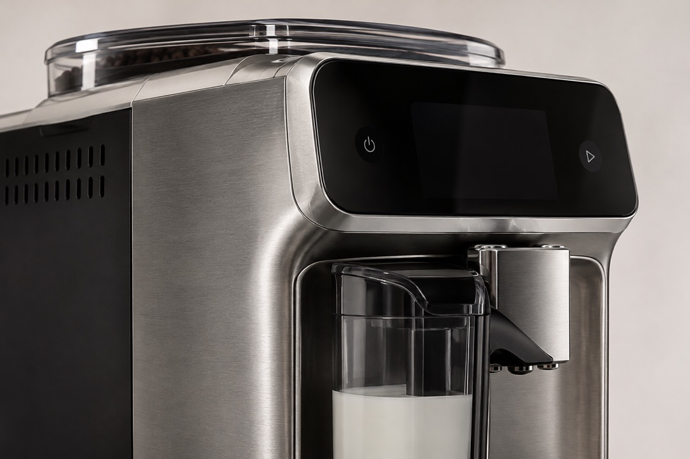
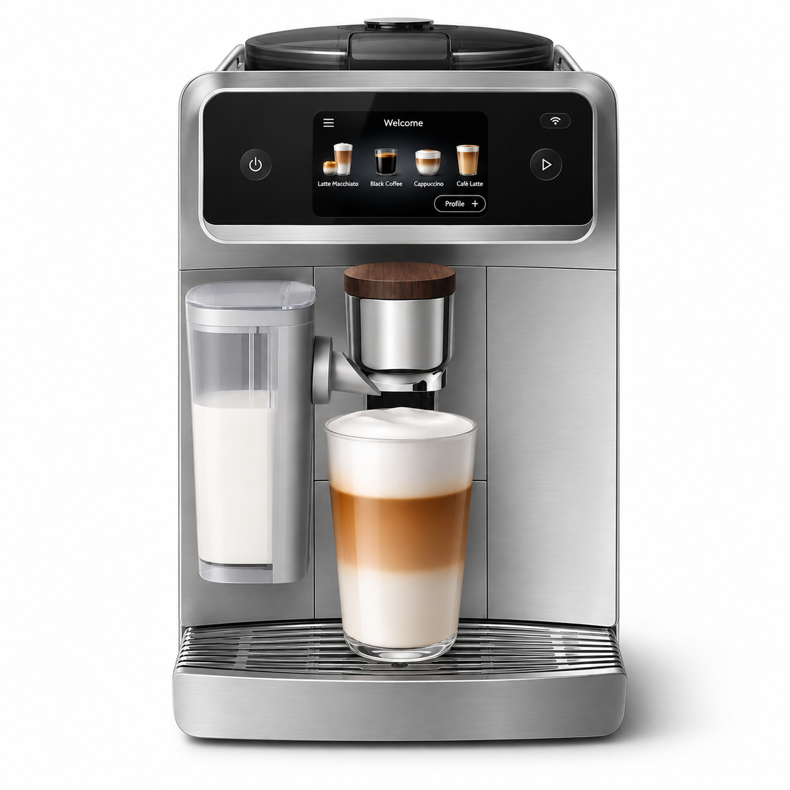
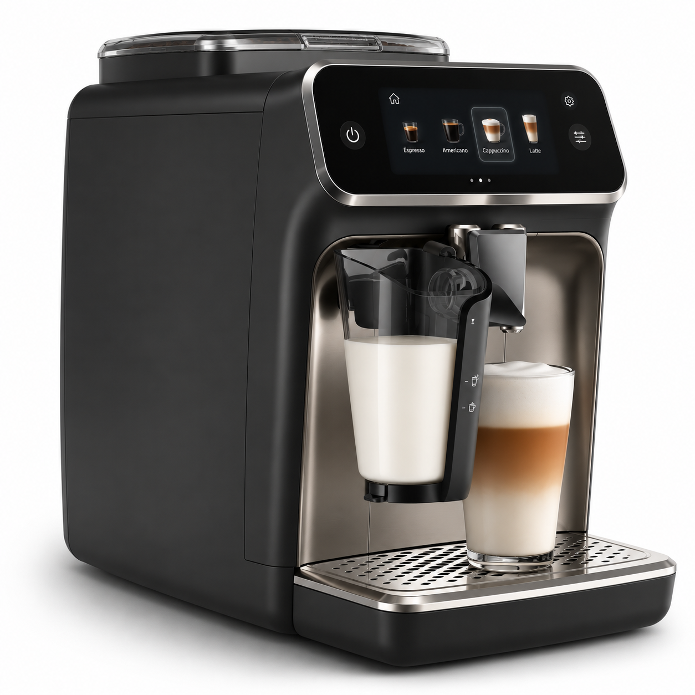
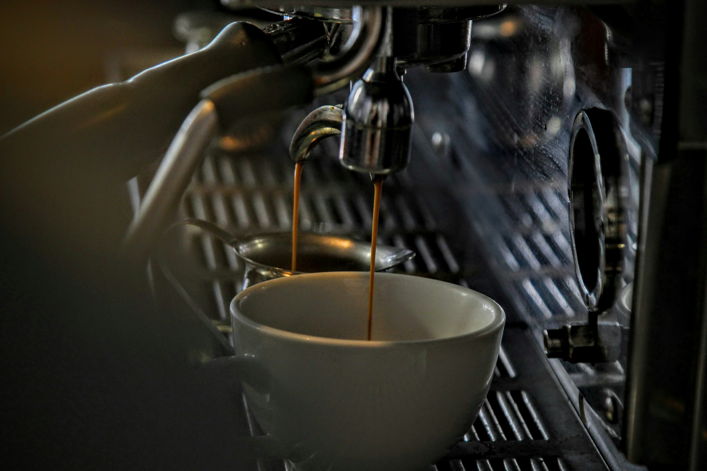
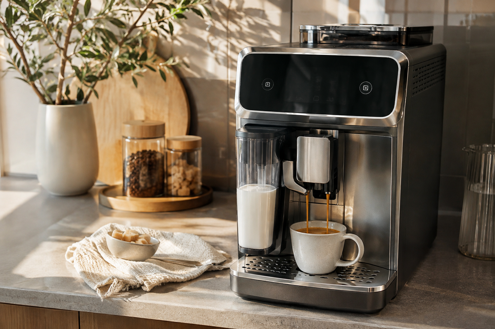
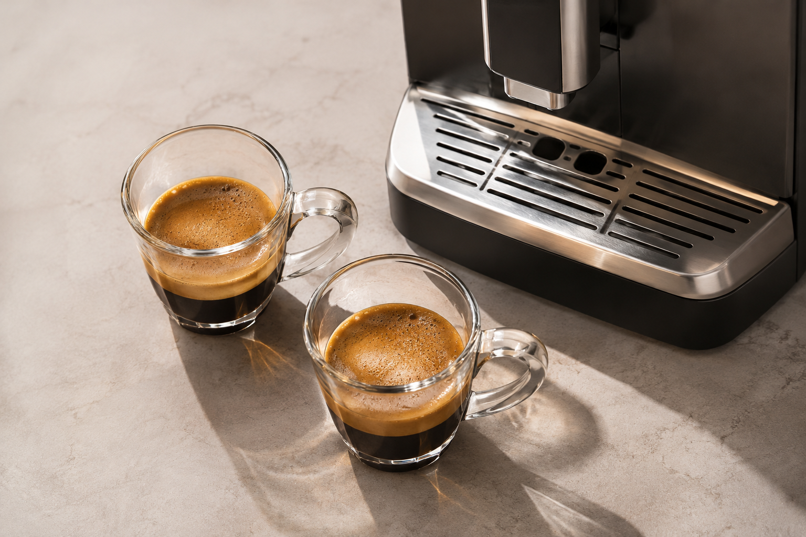
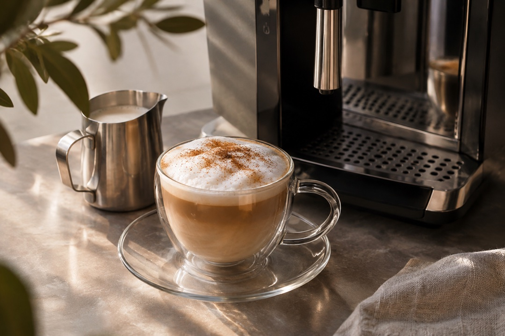
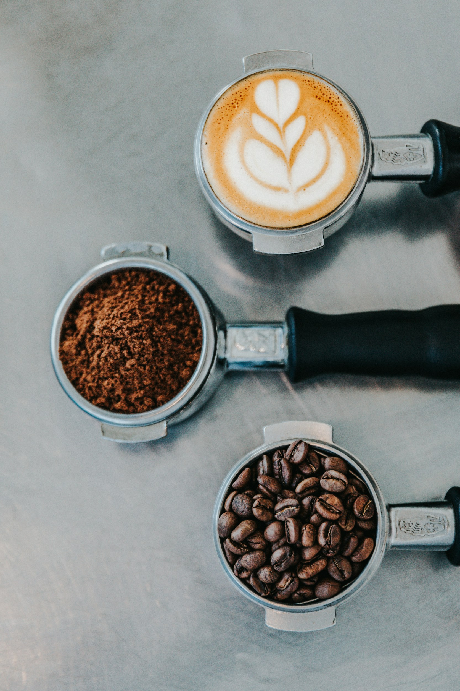
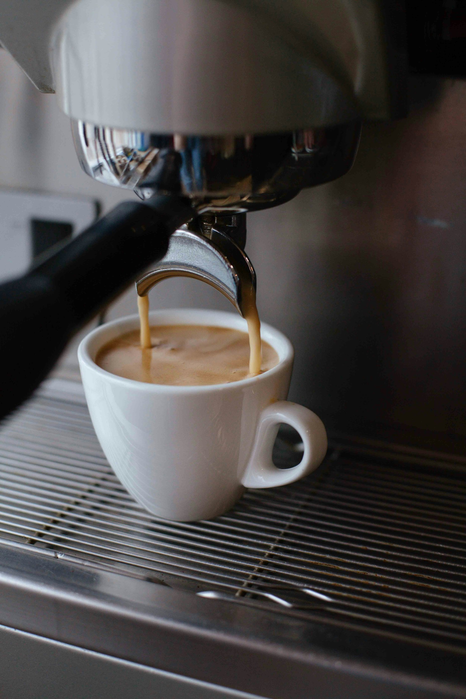
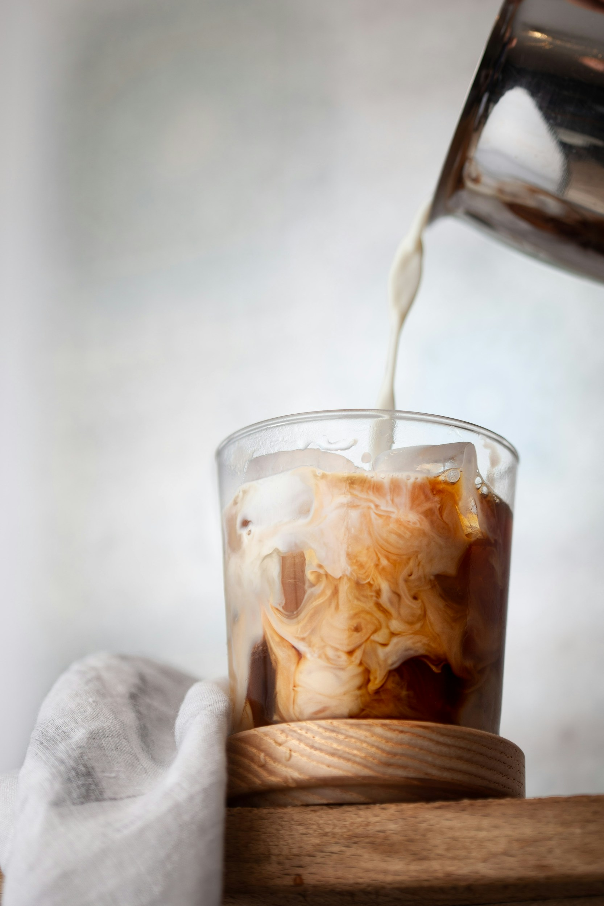

Прочный металлический корпус сочетает долговечность, премиальную эстетику и простоту ухода.
Espresso Automatic Coffee Machine
Совершенство вкуса и технологий в одной чашке

Espresso Automatic Coffee Machine создана для тех, кто ценит аромат настоящего кофе и комфорт современного дизайна.



Прочный металлический корпус сочетает долговечность, премиальную эстетику и простоту ухода.

Любимый кофе готовится одним нажатием, без сложных настроек и лишних действий.

Две порции насыщенного эспрессо одновременно — для вас и ваших близких.

Нежная, воздушная молочная пена для идеального капучино или латте без усилий.

Эта модель объединяет простоту, эстетику и передовые технологии, превращая приготовление напитка в ежедневный ритуал вдохновения.
Одно касание — и вы наслаждаетесь эспрессо, латте или капучино.
Система точно подбирает параметры, чтобы раскрыть вкус каждого сорта кофе.
Создаёт воздушную пену для капучино и латте, легко снимается и моется.

Минималистичный дизайн, лаконичные линии и металлическая отделка делают Espresso Automatic Coffee Machine стильным элементом любого интерьера.
Узнать большеСенсорное управление, бесшумная работа и эргономичная конструкция обеспечивают удобство при ежедневном использовании — дома, в офисе или студии.
Выберите крепость, объём и температуру — кофемашина запомнит ваши предпочтения, чтобы каждый напиток был именно таким, как вы любите.

Espresso Automatic Coffee Machine оснащена системой автоматического отключения и режимом энергосбережения. Прочные материалы и точная сборка обеспечивают долгий срок службы без потери качества.
Espresso Automatic Coffee Machine — идеальное сочетание технологии, вкуса и дизайна. Каждая чашка — маленькое удовольствие, с которого начинается день.